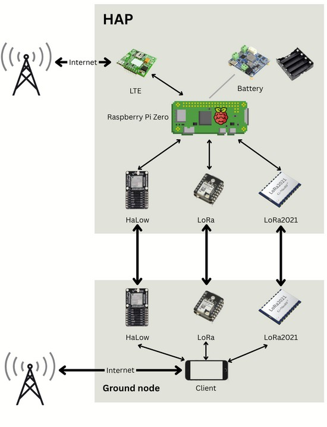
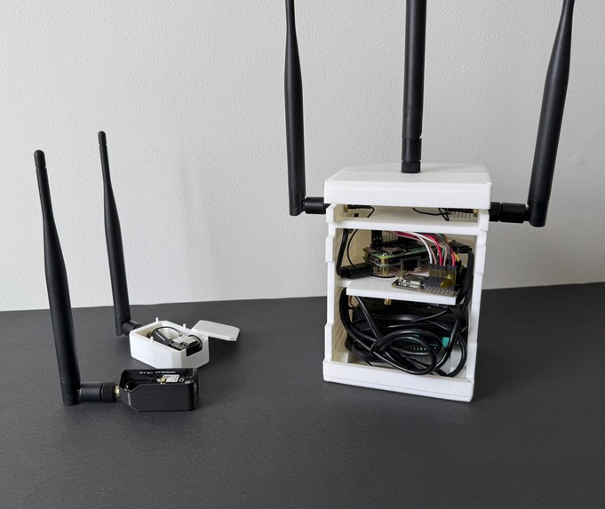
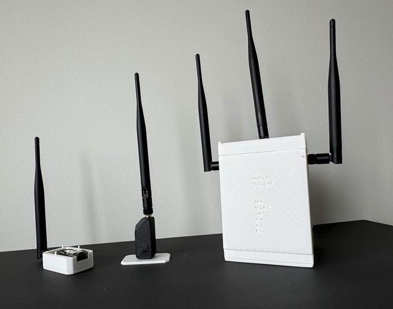
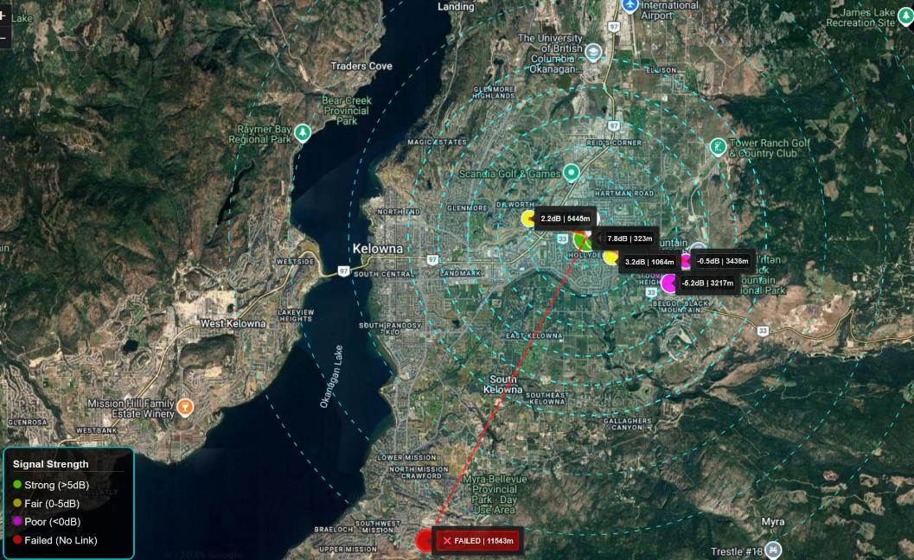
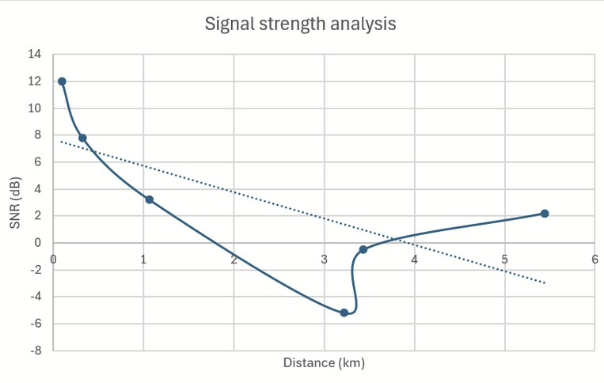
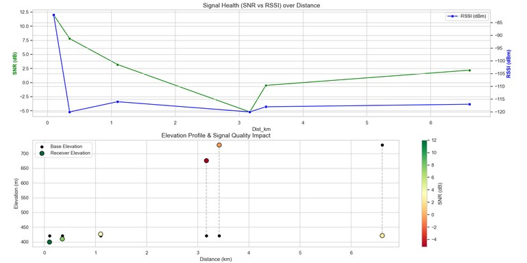

A modular multi-protocol wireless communication system designed for high-altitude balloon deployment, bringing internet access to remote communities and disaster-response teams who need it most.
Billions of people live in areas where terrestrial internet infrastructure simply does not reach. The cost of laying cable across remote or mountainous terrain is prohibitive, and in emergency scenarios even existing infrastructure can collapse entirely. Our client, Dr. Anas Chaaban at UBC Okanagan, posed the question that framed our entire project: could a balloon hovering above the clouds do what a tower on the ground cannot?
The target use case was specific: emergency communications and low-bandwidth internet access for remote communities and disaster-response teams. We needed a system that was lightweight enough to fly, power-efficient enough to run on batteries, affordable enough for a student budget, and compliant with Canadian radio regulations.


Our team of six was tasked with designing, building, and validating a complete RF communications payload suitable for deployment on a high-altitude balloon. The system had to meet four hard constraints simultaneously: mass under 2 kg, battery runtime of at least 30 minutes, total cost under $500 CAD, and compliance with ISED RSS-247 Canadian radio regulations.
My personal role spanned prototype assembly and testing, Wi-Fi HaLow and LoRa module integration, hardware validation, and contributions to the Final Design Report. I was the primary engineer responsible for validating the HaLow and LTE subsystems and confirming the end-to-end communication chain.
Click each stage to expand
We compared three candidate architectures: a simple LoRa point-to-point link, an extended-range LoRa gateway, and an SDR-based LTE-style link. The SDR approach offered flexibility but came in at nearly five times the cost, drew 6W of continuous power, and was too heavy for balloon deployment. LoRa emerged as the right foundation with sub-$210 cost, around 0.05W steady-state power draw, and exceptional receiver sensitivity for long-range links.
Rather than designing a fixed system from the start, we committed to a modular architecture. The core platform was a Raspberry Pi Zero 2W running Linux as the host. We built a minimum viable prototype centred on an ESP32-S3 microcontroller paired with an SX1262 LoRa radio transceiver, and integrated the Reticulum network stack as an abstraction layer that allowed the system to gracefully fall back to LoRa if higher-bandwidth links failed.
With a working LoRa baseline, we added Wi-Fi HaLow (802.11ah), a sub-1 GHz Wi-Fi variant designed for long-range low-power IoT applications. Each added layer was evaluated against the same scorecard: mass added, power consumed, range gained, and complexity introduced. HaLow validated at 4,929 kbps average throughput with a signal strength of negative 61 dBm RSSI indoors.
A 4G/LTE modem was added to connect the entire balloon node to the public internet, completing the chain: a ground user connects over HaLow to the balloon, which relays traffic via LTE to the internet. The increased power draw required a redesigned enclosure with thermal tiering to isolate heat from the Raspberry Pi and prevent thermal throttling.
Each subsystem was validated independently before integration. The LoRa baseline was field-tested across six locations in Kelowna, BC, confirming a 5.4 km link at 75% link quality and 2.2 dB SNR. HaLow was validated indoors achieving 4,929 kbps average throughput. The full end-to-end chain was confirmed with a live speed test at 0.39 Mbps download and 0.45 Mbps upload, well above the 2 kbps design floor.





The final system met every hard constraint: under budget, within mass limits, regulatory-compliant, and capable of end-to-end communication. The modular phased design approach proved essential. By validating each layer independently before integration, we could isolate failures, debug efficiently, and avoid the compounding issues that hit early prototypes where everything was being tested at once.
There were also honest limitations. The LoRa-to-HAP integration failed at 11.5 km outdoors, beyond our proven 5.4 km range. HaLow and LTE were tested indoors only due to time constraints, and no high-altitude balloon deployment was completed. These limitations point directly to the next phase of the project.
End-to-end system demonstration showing the full communication chain from ground node through the HAPS payload to the public internet, with live speed test confirmation of the 0.39 Mbps download and 0.45 Mbps upload result.
For the EngineersWhat I Contributed: My primary contributions included prototype testing, Wi-Fi HaLow and LoRa module testing and integration, final assembly, and contributions to the Final Design Report. I was the primary engineer responsible for validating the HaLow and LTE subsystems and confirming the end-to-end communication chain.
Click any risk to see the failure mode analysis and mitigation strategy. Click the same cell again to close it. RPN stands for Risk Priority Number, calculated as Severity × Occurrence × Detection. Any RPN above 100 was flagged as high priority and required active mitigation.
Future ConsiderationsThe project validated the core concept and hit every target for this phase. What comes next is where things get interesting. Click any card to read more.